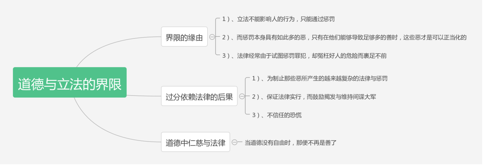

《立法原理》之道德与立法的界限
生活在信息爆炸的现代社会中，每个人都感觉自己责任重大，今天有新闻爆出贪官腐败，明天有新闻爆出老无所依，还记得昨天新闻中幼无所养，或许后天新闻还有欺骗讹诈，信息爆炸的时代很多信息蜂拥而来，我们才发现我们生活的这个世界原来还有这么多的不为人知的事情。于是我们就到网上大肆谴责，要求国家严惩不贷，要求立法机关立法处理。可是，真的所有的不幸和不平等都可以通过法律来解决吗？法律和道德的界限在哪里？这就是本文我们所要讨论的问题！
首先我们对于法律有以下几个共识：第一，法律本身不能影响人的行为，同能通过惩罚来影响人们的行为。而惩罚本身具有如此多的恶，只有在惩罚能够导致足够多的善时，这种恶才可以被正当化，所以法律的适用范围必须加以限制；第二，法律经常由于试图惩罚罪犯却冤枉好人的危险而裹足不前。诚然我们的初衷是为了解决生活中的不平等，但是对于生活中所有的事情，除了当事人本人，事实的真相可能没有人会知道，那么当我们在以事实为依据处罚或奖励他人时，那真的是事实吗？除了上帝没有人知道！！！
当我们试图以法律解决生活中的所有问题时，还有一些其他的问题是值得我们考虑的。首先，法律要解决的问题越多，法律便会变得越复杂。但是通过法律惩罚罪犯的前提在于人们能够了解这些法律，可是越来越复杂的法律本身就在对于公众了解法律的障碍。其次，为了保证法律的实行，必须鼓励揭发并且维持庞大的间谍大军，这本身是一种资源的浪费。最后随着法律的实施，道德被法律代替人与人之间充满的就不是美德，而是虚伪的假善，人与人之间不信任的恐慌蔓延，社会逐渐落入崩溃的边缘！！！
如果，如果当某一天，这个世界上的所有仁慈的道德都被法律的强制所代替，我们最终生活在一个道德就是法律，法律就是道德的世界，那么这世界便不再存在善，因为每个人的自由都已经被剥夺了。
